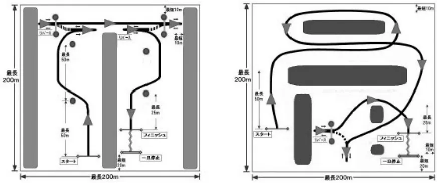

スピード競技開催規定細則オートテスト開催要項
JAF の公式サイトではありません。JAF が公開する PDF を自動変換した非公式の検索用アーカイブです。記載内容は必ず JAF の原本 PDF で出典をご確認ください。 検索と AI 質問つきのビューアで開く
P.1スピード競技開催規定細則：オートテスト開催要項
２０１５年３月２５日制定２０１５年６月１日施行２０１７年６月１日制定
２０１７年７月１日施行２０１９年１１月２８日制定２０２０年１月１日施行
一般社団法人日本自動車連盟（以下「ＪＡＦ」という。）は、４輪運転免許証所持者の自動車運転技術の向上ならびに
日常の安全運転に貢献するため、オートテスト（以下「テスト」という。）の開催要項を以下の通り定める。
１．定義：
一定区画内に前進、後進、180度ターン等を含む任意に設定されたコースで走行タイムおよび運転の正確さを競う
競技。
２．開催場所：
他の交通を遮断した場所であること（ＪＡＦ公認コースを含む）。
３．競技会格式：
クローズド、地方または準国内。
４．競技会役員：
少なくとも競技会審査委員２名、競技長、およびコース・計時・技術の各委員、ならびに競技会事務局長を置かな
ければならない。
５．参加に関する事項：
（１）参加資格
①クローズド：４輪運転免許証所持者
②地方または準国内：国内Ｂライセンス以上の所持者。
（２）重複参加
１台の車両で複数のドライバーが参加できる。
（３）競技同乗者
１名の同乗者が搭乗し、ドライバーに方向等を指示することができる。同乗者はドライバーの横の座席に着座
し、シートベルトを正確に締めていなければならない。
（４）服装および車両装備
自由。
６．参加車両：
保安基準に適合したナンバー（自動車登録番号標または車両番号標）付車両。
７．順位：
（１）走行タイムおよびペナルティポイントを順位要素とし、ポイント数が少ない参加者がウイナーとなる。
走行タイムは、特別規則書に規定することにより採用しないことができる。
（２）ペナルティポイントは、特別規則書で規定しない限り、別表（※）の通りとする。
８．コース：
コース区画は、最大200ｍ×200ｍであること。
９．コース設定：
（１）レイアウトは大型の乗用車にも十分な余裕をもたせ、ハンドブレーキ（フットブレーキ含む）等を使用せずに走行できるものとする。
（２）１回以上４回以内の後退ギアを使用する設定とし、後退ギア使用回数については、特別規則書で規定する。
（３）スタート後、最大でも50ｍ毎にマーカーを設置して方向転換等を行うレイアウトとする。
（４）フィニッシュラインの手前25ｍ以内にマーカーを設置して方向転換等を行うレイアウトとする。
（５）フィニッシュライン後方には一旦停止ラインを設定する。
10．判定事項：
審判員の判定は次の事項を基本する。
（１）反則スタート。
P.2（２）マーカーライン通過／不通過。
（３）マーカー移動・転倒およびミスコース。
〈コース設定の例〉

ペナルティポイント表（※）
| 事 象 | ペナルティポイント |
|---|---|
| （a）スタートあるいは再スタートの遅延（１分ごと）。 | 5 |
| （b）スタート指示の不遵守（走行を試みなかった、あるいは 即座に走行しなかった）。 | 30 |
| （c）下記（d）または（e）に該当しないミスコース、未完走、 または反則スタート。 | 30 |
| （d）コースを区画するフェンス等への接触、マーカーの移 動・転倒、または走行境界線逸脱（１つの行為ごと）。 | 10 |
| （e）設定ラインの不通過あるいは不停止、あるいは特定され た位置での不停止（１つの行為ごと）。 | 5 |